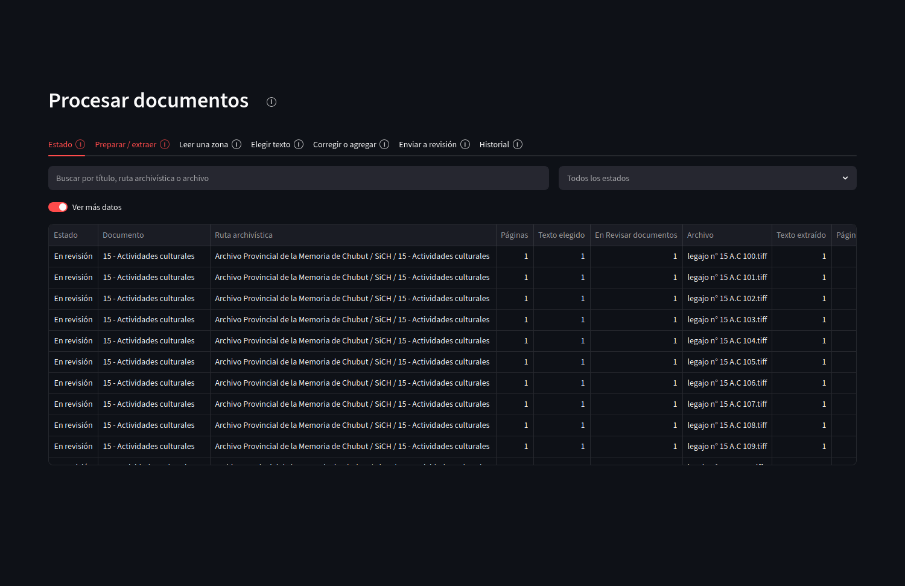
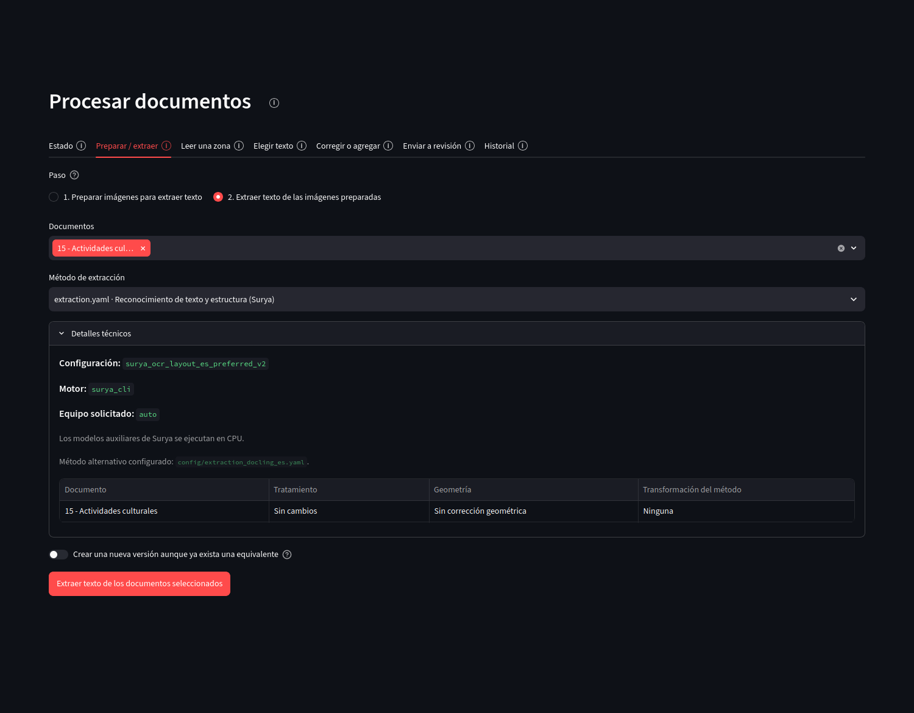
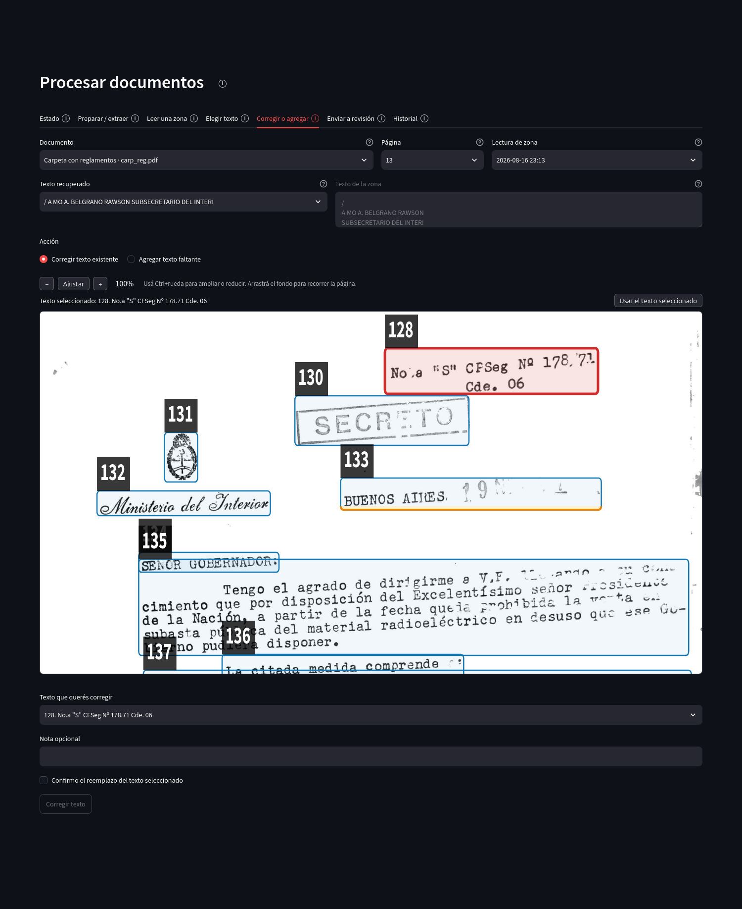

Preparación del corpus
Procesar documentos
Esta sección prepara imágenes, ejecuta extracción de texto y decide qué extracción completa se utilizará como base en Revisar documentos. Los resultados de OCR y las lecturas parciales se conservan separados de las correcciones posteriores.

Abrir captura completa
Estado
La tabla de Estado muestra disponibilidad del archivo, preparación de imágenes, extracción, elección de texto y envío a revisión para cada documento.
{kind=link}

Abrir captura completa
Preparación y extracción
La pestaña separa dos operaciones. Preparar imágenes para extraer texto genera derivados adecuados para el reconocimiento según el perfil elegido y mantiene su vínculo con el archivo de origen. Extraer texto de las imágenes preparadas ejecuta el motor seleccionado sobre esos derivados sin modificar el original.
{kind=link}

Abrir captura completa
Lectura de una zona
Cuando una extracción general no recupera bien una parte de la página, Leer una zona permite marcar una región y ejecutar una lectura localizada. Ese resultado parcial queda separado hasta que se decida si reemplaza un bloque o se agrega como contenido nuevo.
Selección del texto
Si una página tiene más de una extracción completa, Elegir texto permite comparar resultados y seleccionar cuál se incorporará como base de la capa editable.
Elegir una extracción completa es una decisión explícita: la selección queda registrada como parte de la procedencia de la página. Las demás extracciones no se borran y pueden seguir consultándose como resultados anteriores.
Corrección y agregado
Una lectura regional puede utilizarse para corregir el contenido de un bloque existente o para agregar un nuevo bloque cuando falta texto. La acción se aplica sobre la capa editable y conserva una revisión nueva.
{kind=link}

Abrir captura completa
Envío a revisión
Cuando una página tiene una extracción completa elegida, puede incorporarse a Revisar documentos. El envío crea el espacio editable de revisión sin alterar el archivo original.
Historial
Historial conserva las operaciones ejecutadas, los documentos y páginas afectados y el resultado de cada trabajo.
Control de calidad
La aplicación puede calcular advertencias sobre estructura o reconocimiento para orientar una revisión visual. Esas comprobaciones no corrigen automáticamente el texto.